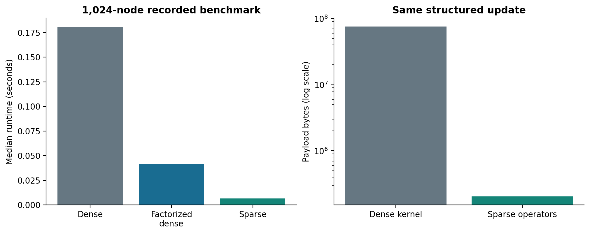
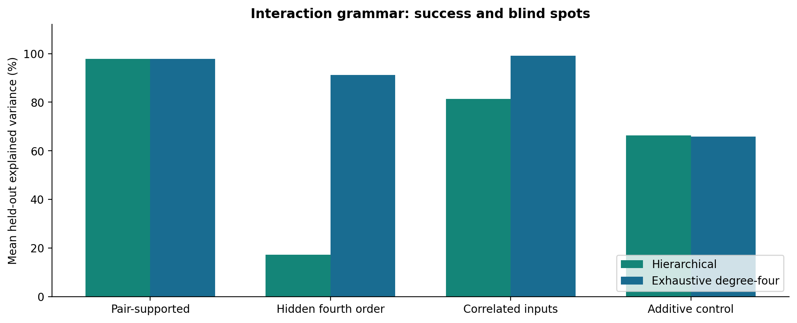

Relationships
That Compute
Research Results Across the HRL Portfolio
Michael Emanuel Glover
A connected account of mathematical results, measured-data studies, synthetic experiments, and executable systems—including work previously held in local research directories. The focus is research results, their supporting evidence, and the next tests that can change the conclusions.
The work, in its own units
I have built a research programme around objects, labels, relationships, and the space we preserve for an unresolved answer. This paper follows that programme from exact sparse implementations and uncertainty representations to interaction discovery, reciprocal grounding, real-data evaluation, chess proofs, and a working ROS 2 apparatus.
The strongest results receive full treatment. So do the counterexamples that sharpen them. Formal conclusions, measured observations, synthetic outcomes, implementation checks, and prospective hypotheses are identified separately throughout.


Inside the paper
- Persistent priors, explicit uncertainty, exact sparse support, locality repairs, and convergence.
- Higher-order interactions, recursive grounding, and autonomous interaction selection within a finite grammar.
- Wearable posture, CRISPR ranking, threat-report extraction, forecasting, economics, and spreadsheet auditing.
- Morphogenesis, virtual cells, language and vision prototypes, and conservation-based models.
- Chess preference and reinforcement experiments, bounded proof certificates, rolling physics, and native ROS integration.
- Anchored graphs, quantum-state representation, typed closure, observational astronomy, and the Genesis data experiments.
“Show the rule. Show the data. Show the counterexample. Preserve what remains unresolved.”